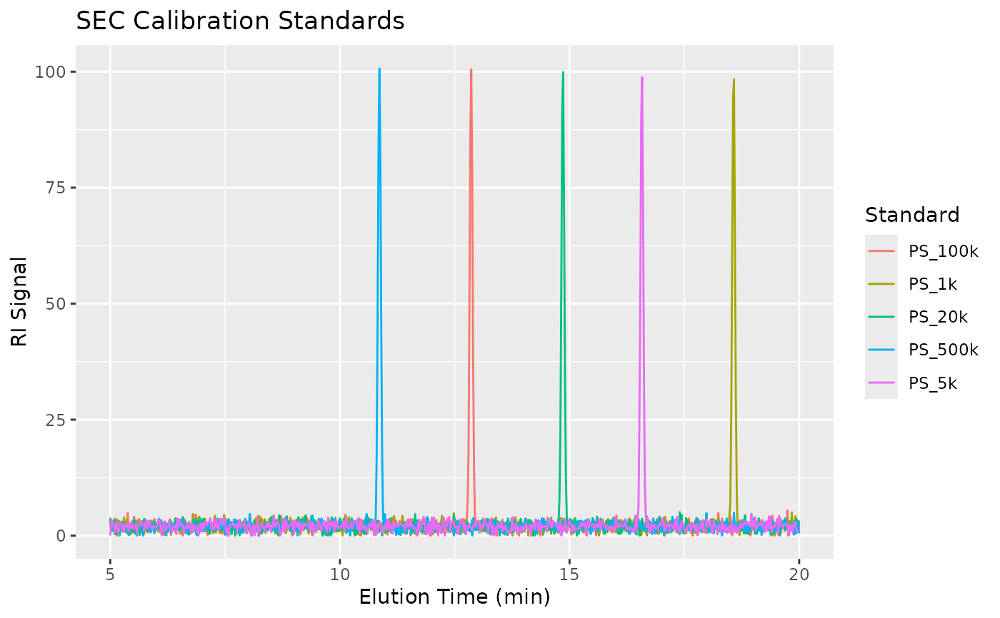

Simulated Size Exclusion Chromatography (SEC) / Gel Permeation Chromatography (GPC) data for demonstration of molecular weight analysis. The dataset includes both narrow polystyrene calibration standards and polymer samples with broad molecular weight distributions.
Format
A tibble with 7,510 observations and 6 variables:
- sample_id
Sample identifier (standard or polymer name)
- sample_type
Either "standard" or "sample"
- elution_time
Elution/retention time in minutes
- ri_signal
Refractive index detector signal (arbitrary units)
- known_mw
Known weight-average molecular weight (g/mol)
- known_dispersity
Known dispersity (Mw/Mn); ~1.05 for standards
Source
Simulated data generated for the measure package. See
data-raw/generate_datasets.R for the generation script.
Details
SEC/GPC separates molecules by hydrodynamic size, with larger molecules eluting before smaller ones. This allows determination of molecular weight distributions and averages (Mn, Mw, Mz, dispersity).
The dataset is useful for demonstrating:
Baseline correction for chromatography
Calibration curve construction using standards
Molecular weight calculations (step_measure_mw_averages)
Molecular weight distribution analysis
The dataset contains:
Calibration Standards (narrow dispersity polystyrene):
PS_1k: 1,000 g/mol
PS_5k: 5,000 g/mol
PS_20k: 20,000 g/mol
PS_100k: 100,000 g/mol
PS_500k: 500,000 g/mol
Polymer Samples (broad distribution):
Polymer_A through Polymer_E with varying Mw and dispersity
The calibration relationship follows: log10(MW) = 9.5 - 0.35 * time
See also
sec_calibration for the calibration standards summary
hplc_chromatograms for HPLC chromatography data
step_measure_mw_averages for molecular weight calculations
Examples
data(sec_chromatograms)
# View structure
str(sec_chromatograms)
#> tibble [7,510 × 6] (S3: tbl_df/tbl/data.frame)
#> $ sample_id : chr [1:7510] "PS_1k" "PS_1k" "PS_1k" "PS_1k" ...
#> $ sample_type : chr [1:7510] "standard" "standard" "standard" "standard" ...
#> $ elution_time : num [1:7510] 5 5.02 5.04 5.06 5.08 5.1 5.12 5.14 5.16 5.18 ...
#> $ ri_signal : num [1:7510] 1.63 2.29 2.95 1.89 1.97 ...
#> $ known_mw : num [1:7510] 1000 1000 1000 1000 1000 1000 1000 1000 1000 1000 ...
#> $ known_dispersity: num [1:7510] 1.05 1.05 1.05 1.05 1.05 1.05 1.05 1.05 1.05 1.05 ...
# Separate standards and samples
library(dplyr)
standards <- sec_chromatograms |> filter(sample_type == "standard")
samples <- sec_chromatograms |> filter(sample_type == "sample")
# Plot standards (if ggplot2 available)
if (requireNamespace("ggplot2", quietly = TRUE)) {
library(ggplot2)
ggplot(standards, aes(x = elution_time, y = ri_signal, color = sample_id)) +
geom_line() +
labs(x = "Elution Time (min)", y = "RI Signal",
title = "SEC Calibration Standards",
color = "Standard")
}
